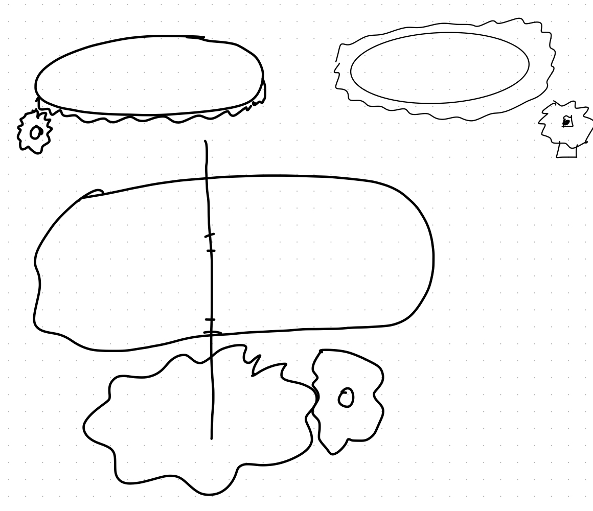
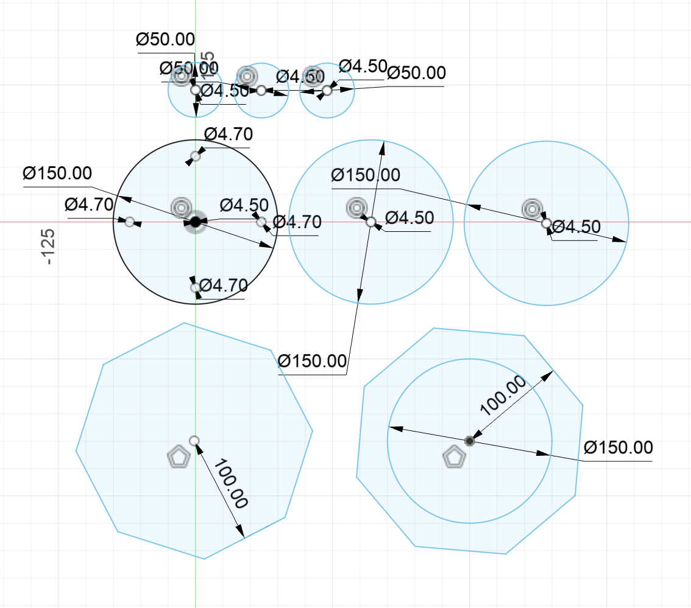
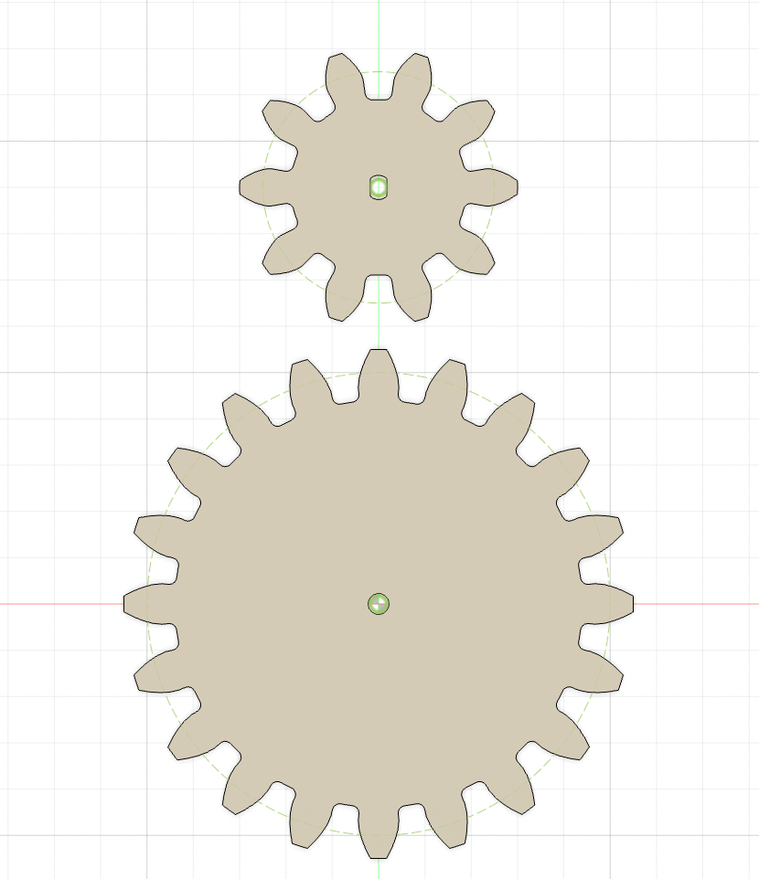
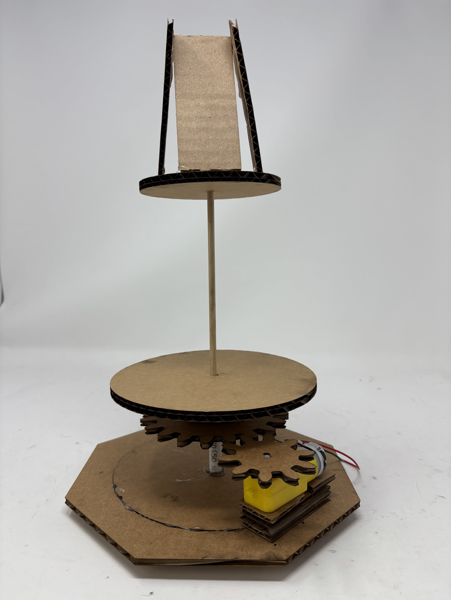

<div class="textcontainer">
<p class="margin"> </p>
<h3>Week 3: Hand Tools and Fabrication</h3>
<h4>Kinetic Sculpture</h4>
<p> For this assignment, we are creating a kinetic sculpture. I am creating a carousel inspired sculpture. </p>
<p> I first brainstormed a few ideas for my carousel and how I would use the gear mechanism to spin the platform base. </p>
<div style = "display: flex;">

</div>
<p> After gaining an understanding of the parts I would need, I created the small pieces in Fusion360. Here we have a series of circles and rectangles to stack together to make the base. I also created the gears using a module of 10 and 20 teeth for the big gear and 10 teeth for the small gear. </p>
<div style = "display: flex;">
<img src="./circle_parts.jpg" alt="circular pieces" style="width:300px">
<img src="./rect_parts.jpg" alt="rectangular pieces" style="width:300px">
</div>
<p> Figures showing Fusion360 Prints </p>
<div style = "display: flex;">


</div>
<p> Laser printed showing Fusion360 Prints </p>
<div style = "display: flex;">
<img src="./laserprints.jpg" alt="small_parts" style="width:300px">
</div>
<p> Next step, is to assemble all the circular parts on the skewer.
<div style = "display: flex;">

</div>
<br></br>
Here is a proof of concept:
<br></br>
<video width="640" height="480" controls>
<source src="proofofconcept.mp4" type="video/mp4">
</video>
<p> I have also attached a small pipe and a rubber stopper to be mounted on the base. Here is the final sculpture altogether. </p>
<div style = "display: flex;">
</div>
<p> Here is a video!
<br></br>
<video width="640" height="480" controls>
<source src="final_sculpture.mp4" type="video/mp4">
</video>
<p> Next steps: </p>
<p> 1) Use sturdier material, wood or acrylic to make. </p>
<p> 2) Make a more steady hold for the gear. </p>
<p> 3) Complete the full housing for the base of the carousel. </p>
</div>